This demo should take about 6 minutes.
We will be looking at how to use the Xamarin.Forms Map control and how to use the Xamarin Geolocation plugin to retrieve GPS coordinates.
Hyper-V enabled PC. Required for the Visual Studio UWP and Visual Studio Android emulators.
Internet connection is required in order to setup and run the demos.
You will need Visual Studio 2015 or Community edition with Update 3
To download Visual Studio 2015 Community edition, https://www.visualstudio.com/vs/mobile-app-development/
Visual Studio Android emulator: https://www.visualstudio.com/vs/msft-android-emulator/
If you encounter issues with connecting Visual Studio debugger with the Visual Studio I would recommend following the steps from this blog article: http://dotnetbyexample.blogspot.ca/2016/02/fix-for-could-not-connect-to-debugger.html
Get the Android emulator running ahead of the demo. Use the link above to install the Visual Studio Android emulator if you don’t have it already.
In Visual Studio, under the Tools menu options (1). Select the Visual studio Emulator for Android option (2).
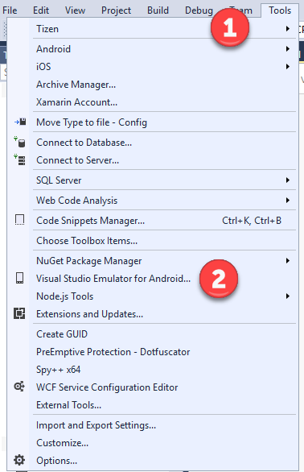
Select the Android device profile 5”KitKat (4.4) XXHDPI Phone (1). Click the Run green button (2). Click the Close button (3).
Go to the Solutions folder with this content, locate the Demo3.5.zip file, extract it to a new folder under your Documents folder.
Open the Solution file under the Complete folder, using Visual Studio.
Go to Xamarin Forms Android head and set it as the Startup Project (1).
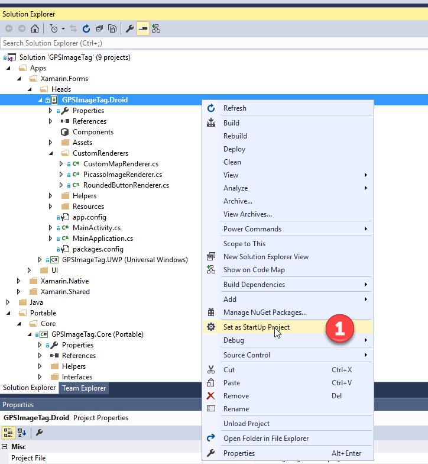
Press F5 to run the application.
Take a photo and upload. We are now tagging the photos with GPS coordinates. Select Upload Photo tab (1). Next click the ‘TakePhoto’ button (2). Enter the photo name and description (3). Click the Upload button (4).
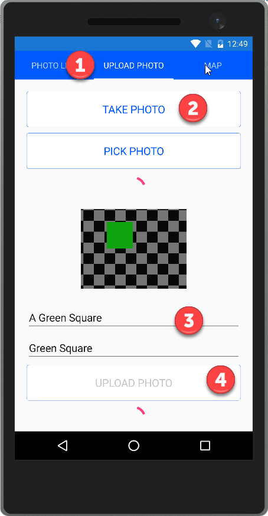
Stop debugging the app.
Now login into the Azure portal and navigate to the Mobile Services photo table and show the photo that was taken in the previous step (1). It now has the Latitude and Longitude set.
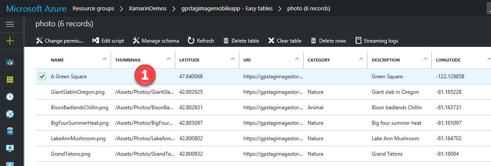
A new code service was added to the GPSImageTag.Core project. Open GPSService.cs. It just has the one async method that uses the Xamarin GeoLocator cross platform plugin to return the current GPS location.
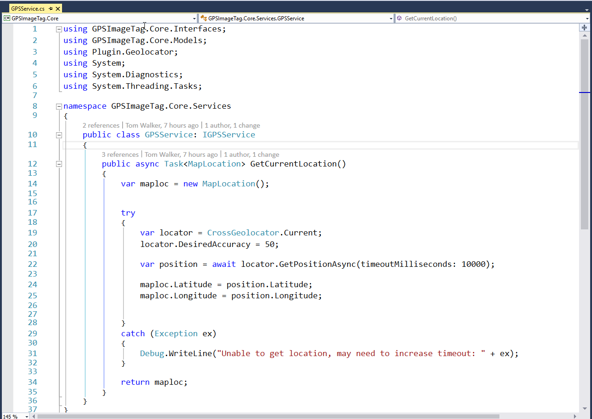
Go to CameraPageViewModel.cs in the GPSImageTag.ViewModels project. The UploadPhoto method now calls the new GPSService to return current GPS location and passes that to the mobile service when uploading a new photo to Azure.
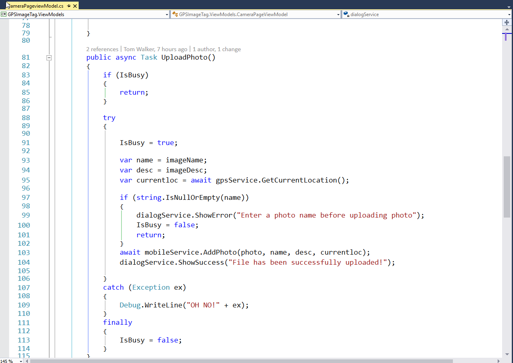
Navigate to AzureService.cs within the GPSImageTag.Core. Here we see that the AddPhoto method has been updated to include 2 new properties of Latitude and Longitude.
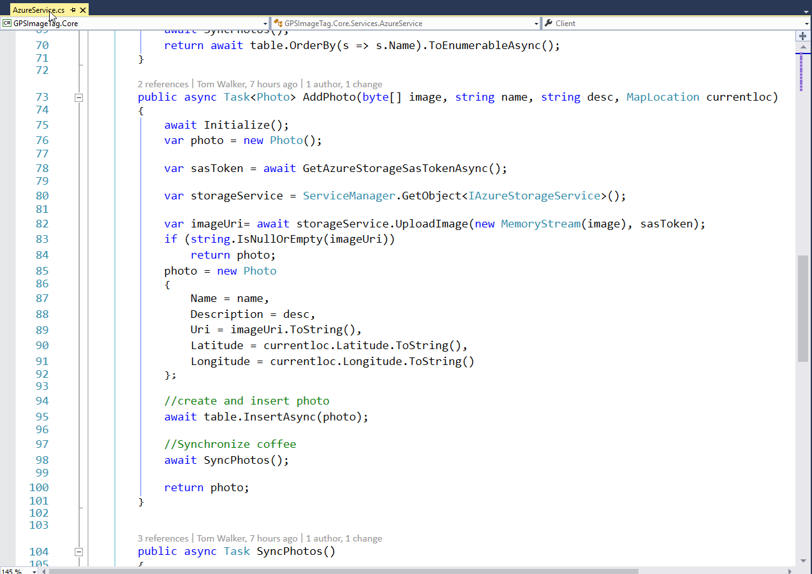
Go to Xamarin Forms UWP head (1). Bring up the pop menu and Set it as the Startup Project (2).
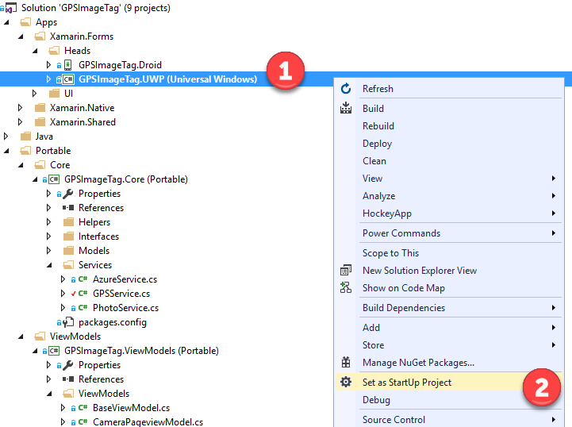
Press F5 to run the UWP project.
Go to Map tab (1). Press the Photo button to place the maps pins (2). If we click on the map pins we can see the thumbnail of the photo along with the name and description (3).
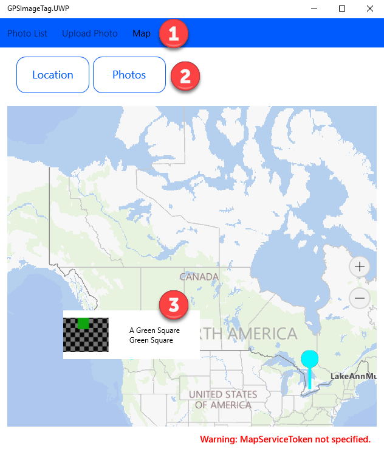
Within the GPSImageTag under the Controls folder we have a new control called CustomMap.cs. This class inherits from the base Xamarin.Forms Map control. Here we have defined a bindable CustomPins property.
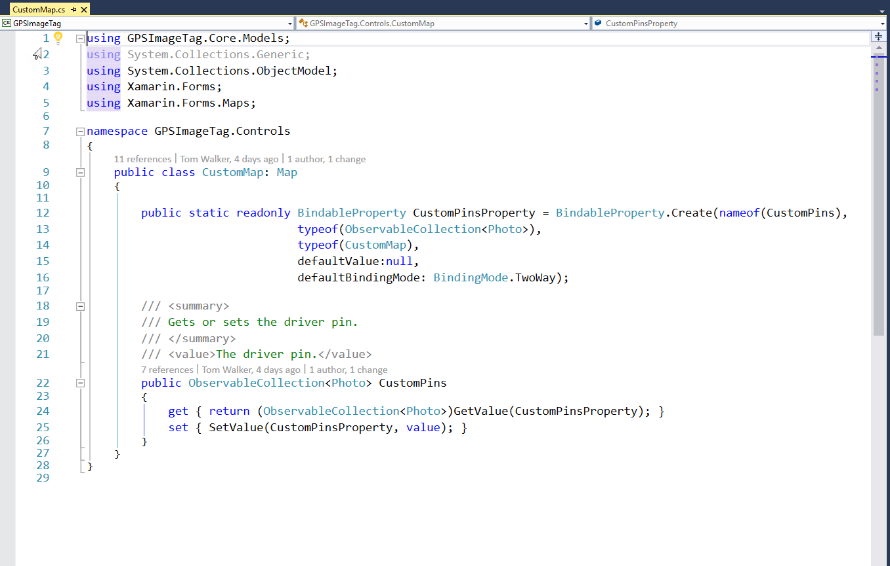
Here we have the code behind the for the MapPage in MapPage.xaml.cs. We can see we have a click event which calls the viewmodel’s Getlocation() method and sets the display map to that location.
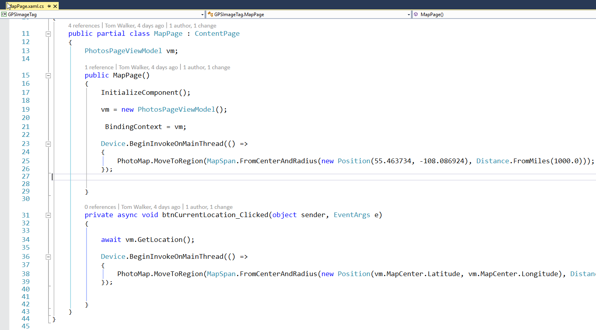
With our CustomMap we had defined a bindable CustomPins property. We can now bind this property to the viewmodel’s Photo collection and allow Xamarin Xaml to bind the data to our UI for us.
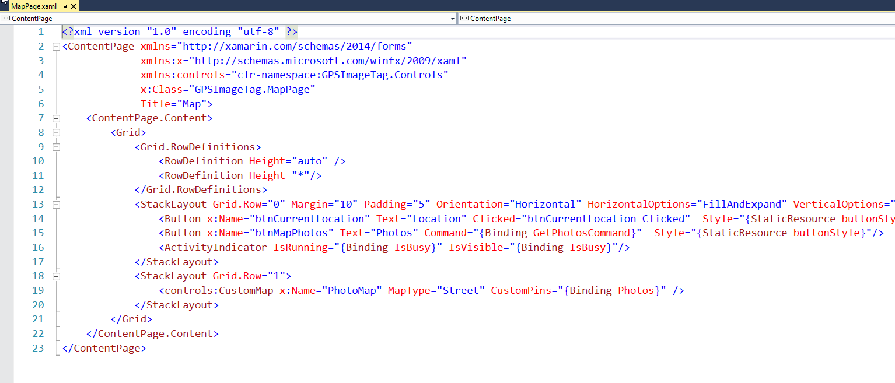
For each of the Xamarin.Forms heads we have a custom map renderer. Here’s the one for UWP. The ExportRenderer attribute is set to our CustomMap control (1). Whenever Xamarin.Forms has to draw our CustomMap we use the custom renderer to setup the UI.
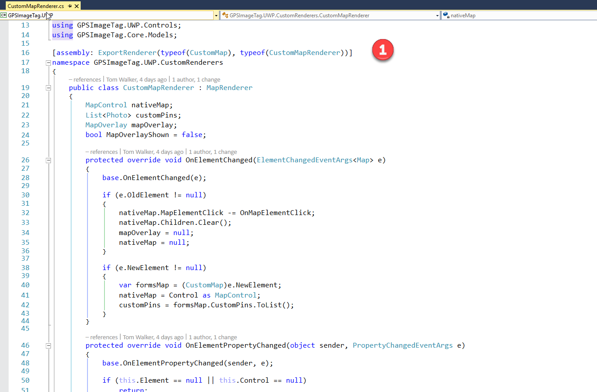
Within the custom map renderer, we have overridden the OnElementPropertyChanged event (1). We check to see if the CustomPins property has been updated and if so we add the custom pins and setup the overlays for each of them (2).
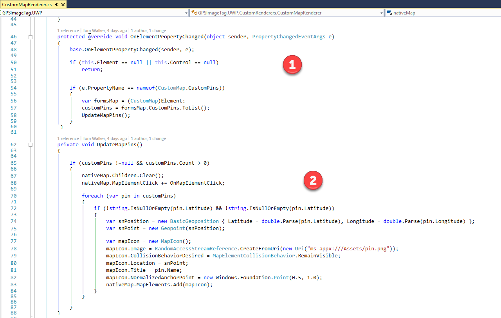
To define the look of the pin overlays we have to define a control or layout for it. For UWP we define a user control to define the UI for our custom pin overlay.
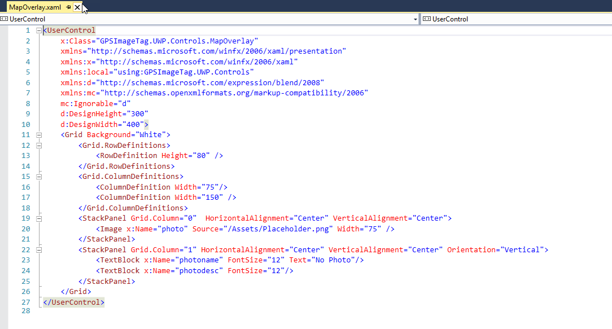
Explain that it works differently on Android & iOS so they need different renderers, otherwise the user will just see a basic map with non-interactive pins. In order to render the maps on Android you would need to test on a physical device with Google services installed.